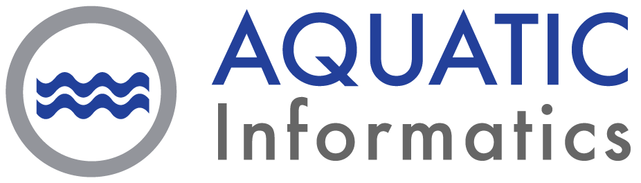
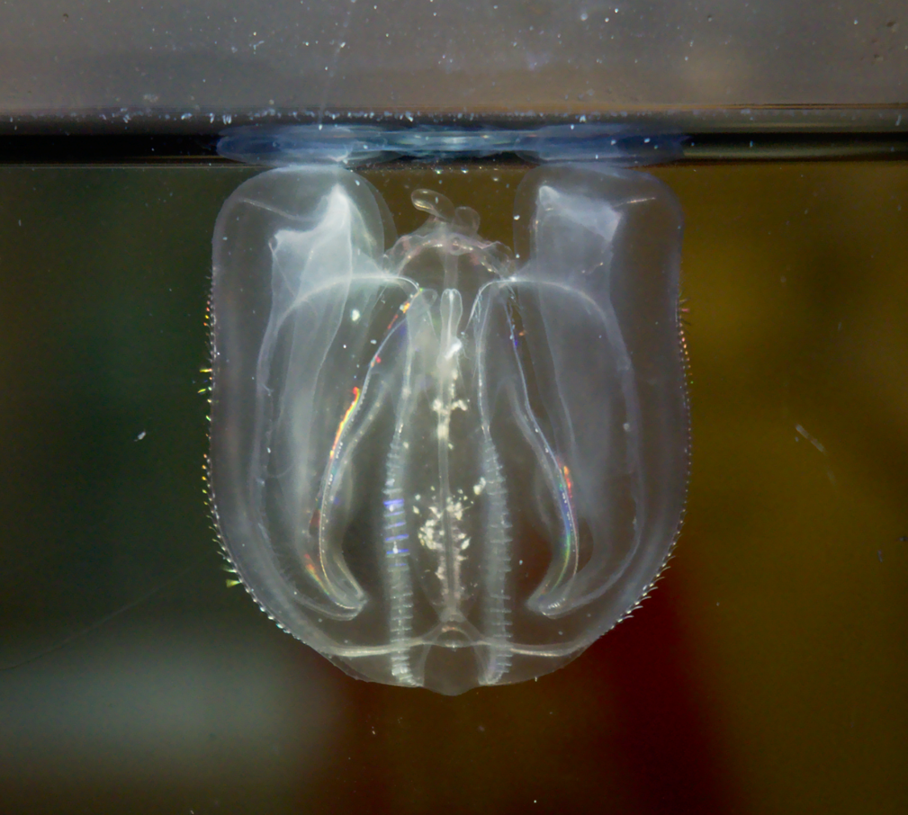
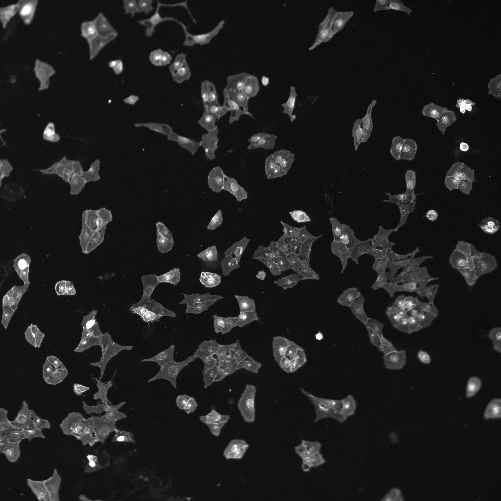
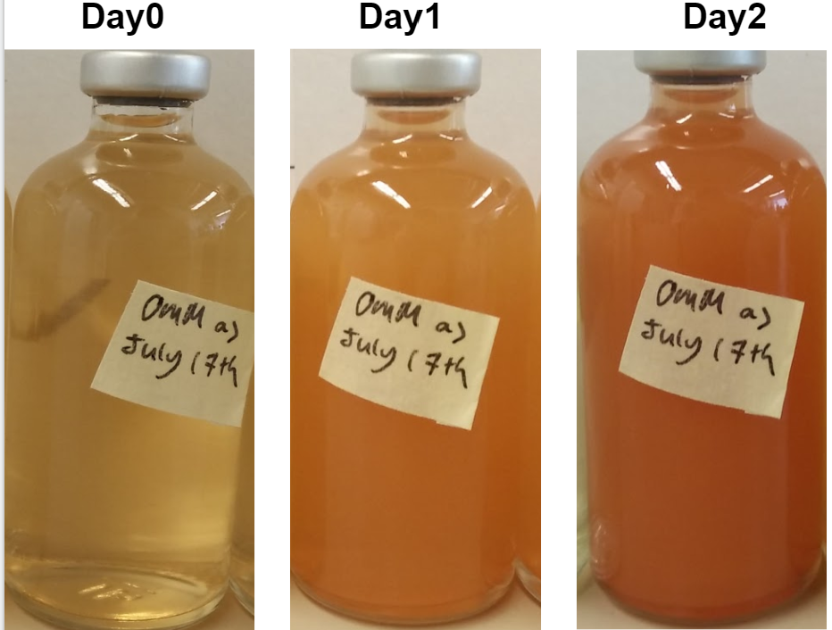

Designed and implemented architectural rework of MATLAB data classes of medical device’s procedural data.
...
Coordinated hardware integration in new software use cases of an optical tracking application.
Full Stack Developer (Co-op)
May 2021 - Aug 2021

Implemented features, tests, and debugged the SaaS application, AQUARIUS Samples.
Developed shell scripts to automate the collection of the cloud application’s performance data.
Collaborated in an Agile team environment to strategize and meet sprint commitments.
Systems Software Engineering Co-op
Sept 2020 - Apr 2021
Took ownership of a binocular tracking project, developing an algorithm that detects an object and computes it's translational and rotational motion.
Worked extensively with Open CV to perform stereo calibration on camera setup and detect features of interest from a video stream.
Additionally, assisted in data extraction from experimental procedures and expansion of MATLAB data extraction tools used in house.
Research Assistant (Biophysics Lab)
Sept 2018 - May 2019

Worked with Steve Plotkin on the Honours Thesis: Construction of a Ctenophore Husbandry System for Experimentation and Genetic Network Modeling.
Participated in pioneering work on establishing the first ctenophore husbandry system for the purpose of evolutionary biology research; started with basic knowledge and limited access to Mnemiopsis leidyi.
Setup and maintained protocols of the ctenophore culturing system and documented through troubleshooting and fine tuning of the culturing system to determine viable conditions for the M. leidyi to survive.
Biophotonics Research Assistant
Jan - Aug 2018

Set up proof of concept experiments for novel laser-based multi-live-cell labeling method. Worked with fluorescent and brightfield microscopy, microscopy aided laser irradiation and culturing human cells.
Developed MatLab code for brightfield and fluorescent cell image segmentation and cell fluorescence analysis, pre and post irradiation
CHEBE Research Internship
Jan - Aug 2018

Worked directly with a Post-Doctoral Fellow in the laboratory investigating the bioremediation of industrial wastes using microbial consortia.
Prepared bacterial enrichment cultures samples for various analysis including, flow cytometry, mineralogy and DNA sequencing.
Produced python script to analyze raw flow cytometry data to eliminate dependency on FlowJo, a flow cytometry data analysis software.